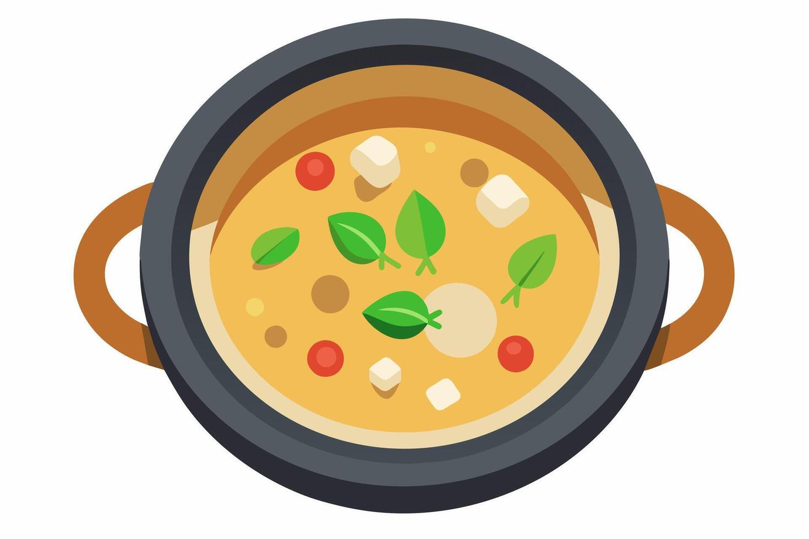

Die Köstlichkeiten der thailändischen Küche
Die thailändische Küche ist weltberühmt für ihre Vielfalt und die ausgewogene Mischung aus süßen, sauren, salzigen und scharfen Aromen. Jedes Gericht ist ein Meisterwerk der Aromen, das von frischen Zutaten und einzigartigen Gewürzen lebt.
Beliebte thailändische Gerichte
| Gericht | Beschreibung | Typisch für |
|---|---|---|
| Pad Thai | Ein gebratener Reisnudelgericht mit Eiern, Tofu oder Garnelen, Erdnüssen, Limette und einem würzigen Tamarindensauce. | Landesweit, besonders in Bangkok |
| Tom Yum | Eine scharfe und saure Suppe mit Zitronengras, Chili, Kaffir-Limettenblättern und Garnelen oder Hähnchen. | Landesweit, besonders in Südthailand |
| Som Tum | Ein würziger Papayasalat mit Chili, Limette, Fischsauce, Erdnüssen und getrockneten Garnelen. | Besonders im Nordosten Thailands |
| Green Curry | Ein intensives grünes Curry aus Kokosmilch, grünem Curry-Paste, Hähnchen, Auberginen und Basilikum. | Besonders in Zentralthailand |
| Mango Sticky Rice | Ein Dessert mit süßem Klebreis, frischen Mangos und einer Kokosmilchsauce. | Beliebt landesweit, besonders während der Mango-Saison |
